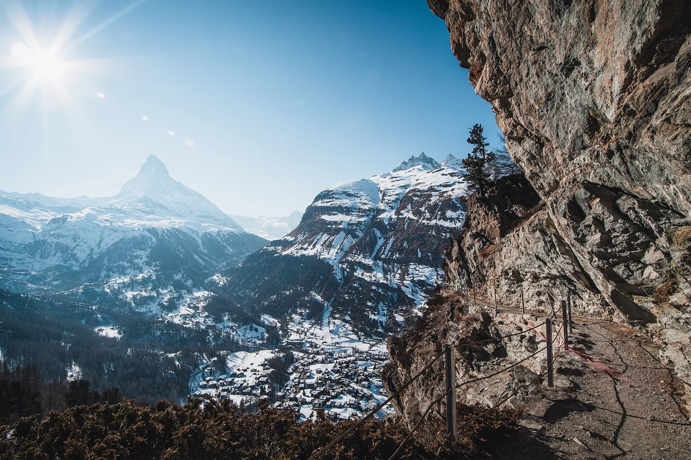

Valais, Switzerland
Car-free Zermatt
Central hotels keep restaurants and village life close; THE OMNIA adds an elevated sense of separation.
Valais, Switzerland
The Matterhorn gives the village its bearings; the choice is whether to stay within it or above it.
Your preferences. Thoughtful options. Personal attention throughout.

Valais, Switzerland
Central hotels keep restaurants and village life close; THE OMNIA adds an elevated sense of separation.
Valais, Switzerland
Stay at mountain altitude and let the railway and the peaks shape the rhythm.
A few considered examples. Your personal selection extends beyond these pages, with stays and privileges chosen around your preferences.
40 Triftweg, Zermatt, Valais, Switzerland
A contemporary lodge lifted above the village, reached through a tunnel and private lift.
Who it suits
Guests whose priorities match this setting and the style described below.
Arrive in car-free Zermatt with the last transfer already arranged, then disappear into the tunnel and emerge above the village. A morning might lead towards the mountain, while a companion stays for the pool and a quieter view of the day. Meet again before dinner at LOFT & LODGE, where the lodge setting feels different from a grand dining room. There is still time to walk into Zermatt afterwards, or simply return to the fire and stay above it all.
Getting there & getting around
Rail via Täsch into car-free Zermatt, then the arranged local transfer.
Before choosing
Restaurant bookings for eight or more use a set menu or individual arrangement. Confirm room outlook and the lift-to-ski route.
A different choice
Mont Cervin Palace favours a central village setting; Riffelalp puts the stay up on the mountain.
Details checked · 26 Oct 2026
31 Bahnhofstrasse, Zermatt, Valais, Switzerland
A substantial central-village hotel when restaurants, walking and a broad spa offering matter alongside skiing.
Who it suits
Guests whose priorities match this setting and the style described below.
Step out onto Bahnhofstrasse before deciding whether the day belongs to the mountain or the village. The skiers can leave for the lifts while others browse, walk or return for a swim when the spa is operating. A central meeting point makes it easy to reunite without everyone committing to the same activity. Dinner could remain at the hotel, with the restaurant chosen around the group rather than one fixed menu. Another evening, walk out and let Zermatt supply the change of scene.
Getting there & getting around
Rail to car-free Zermatt; reserve a station pickup and daily lift connections.
Before choosing
Spa Nescens is listed as closed until 10 December 2026. Check each restaurant’s calendar and the booked room category.
A different choice
THE OMNIA offers greater separation above the village; Riffelalp gives a higher mountain base.
Details checked · 26 Oct 2026
55 Bahnhofstrasse, Zermatt, Valais, Switzerland
A historic village-centre alternative with a strong sense of arrival and traditional hotel life.
Who it suits
Guests whose priorities match this setting and the style described below.
Begin with the railway arrival, not a plan to drive to the door. Once in Zermatt, a prearranged local transfer makes the final part feel simple. A village morning can lead to the mountain or a leisurely lunch, with the hotel remaining an easy place to gather again. Reserve a fondue evening at saycheese! if that is the mood, and leave another night for a different table. The pleasure is in having a traditional village base without making every hour a ski appointment.
Getting there & getting around
Train via Täsch; electric pickup or separately confirmed horse-carriage arrival.
Before choosing
Confirm the seasonal opening dates, station pickup and the exact room category.
A different choice
Mont Cervin Palace is another central grand-hotel choice; compare individual room layouts and dining preferences.
Details checked · 26 Oct 2026
Riffelalp, above Zermatt, Valais, Switzerland
Stay on the mountain itself when altitude, the Matterhorn outlook and time away from the village are the point.
Who it suits
Guests whose priorities match this setting and the style described below.
Take the railway above Zermatt and let the arrival establish a different rhythm. The mountain is now the setting for breakfast, not somewhere still to reach from town. Plan a ski day or a gentler outing around the conditions, then return for a swim with the peaks still in view. An evening at the resort avoids a late return from the village. Choose this stay for being up here, and allow the railway and the season to shape any outings below.
Getting there & getting around
Gornergrat Railway to Riffelalp; seasonal final transfer. Cars cannot reach the hotel.
Before choosing
A summer tram or winter walk connects the station and hotel, with seasonal luggage arrangements. Confirm railway hours and mobility needs.
A different choice
Choose a village hotel if frequent independent evenings out matter more than a mountain base.
Details checked · 26 Oct 2026
| Property / setting | Style / suggested fit | Main reason to choose it | Accommodation | Facilities | Access / transport | Season / practical considerations |
|---|---|---|---|---|---|---|
| THE OMNIA 40 Triftweg, Zermatt, Valais, Switzerland | Contemporary elevated lodge | A contemporary lodge lifted above the village, reached through a tunnel and private lift. | Thirty rooms include twelve suites. | LOFT & LODGE is the current restaurant; the spa is reserved for hotel guests. | Rail via Täsch into car-free Zermatt, then the arranged local transfer. | Restaurant bookings for eight or more use a set menu or individual arrangement. Confirm room outlook and the lift-to-ski route. |
| Mont Cervin Palace 31 Bahnhofstrasse, Zermatt, Valais, Switzerland | Central grand hotel | A substantial central-village hotel when restaurants, walking and a broad spa offering matter alongside skiing. | The Bahnhofstrasse address places village life close to the hotel. | Spa Nescens includes indoor and outdoor pools. | Rail to car-free Zermatt; reserve a station pickup and daily lift connections. | Spa Nescens is listed as closed until 10 December 2026. Check each restaurant’s calendar and the booked room category. |
| Grand Hotel Zermatterhof 55 Bahnhofstrasse, Zermatt, Valais, Switzerland | Historic village hotel | A historic village-centre alternative with a strong sense of arrival and traditional hotel life. | Rooms and suites; the layout and outlook are confirmed for the chosen category. | Vita Borni spa includes an indoor pool and whirlpools. | Train via Täsch; electric pickup or separately confirmed horse-carriage arrival. | Confirm the seasonal opening dates, station pickup and the exact room category. |
| Riffelalp Resort 2’222m Riffelalp, above Zermatt, Valais, Switzerland | High mountain resort | Stay on the mountain itself when altitude, the Matterhorn outlook and time away from the village are the point. | The spa is for hotel guests; village dining requires deliberate transport planning. | Spa 2’222m has indoor and outdoor pools, a saline grotto and saunas. | Gornergrat Railway to Riffelalp; seasonal final transfer. Cars cannot reach the hotel. | A summer tram or winter walk connects the station and hotel, with seasonal luggage arrangements. Confirm railway hours and mobility needs. |
Browse Hotels & Private Stays ↗ · Private villas & group stays ↗
A selection to inspire your next evening. In every destination, we shape a shortlist around you, with further tables, experiences and privileges shared personally with our clients. Tell us your taste; your time is ours to look after.
Explore by cuisine & occasion ↗
One reservation or every evening of your stay. A wider world of possibilities, shared personally and arranged around you.
A separate sightseeing possibility for guests who want to see the mountain landscape from above; this is not described as heliskiing.
Season Operator, weather and aircraft availability dependent
Licensed operator reservation request; route, suitability and departure confirmed individually.
Discuss this experience ↗Tell us when you will be here. We will share occasions and experiences to shape your time around.
Browse Events & Experiences ↗Arrive by rail with luggage and the final transfer already considered. A first walk through the village makes a gentler beginning than rushing straight to a lift.
A ski day can lead to lunch in Findeln while non-skiers choose an appropriate mountain outing of their own. Glacier Paradise, a scenic flight and cross-border skiing each need a separate plan: weather, lift operation and return timing matter.
Our attention continues beyond the reservation. Contact us 24/7 during your stay, including for a change of plan or a spontaneous idea. We explore suitable options and confirm the arrangements you choose.
Tell us which place or property appeals. Approximate dates and an idea are enough to begin.
Begin an EnquiryContact us 24/7. Our team will respond personally; email info@zelrocprive.com whenever it suits you.
A little inspiration—or something already in mind?